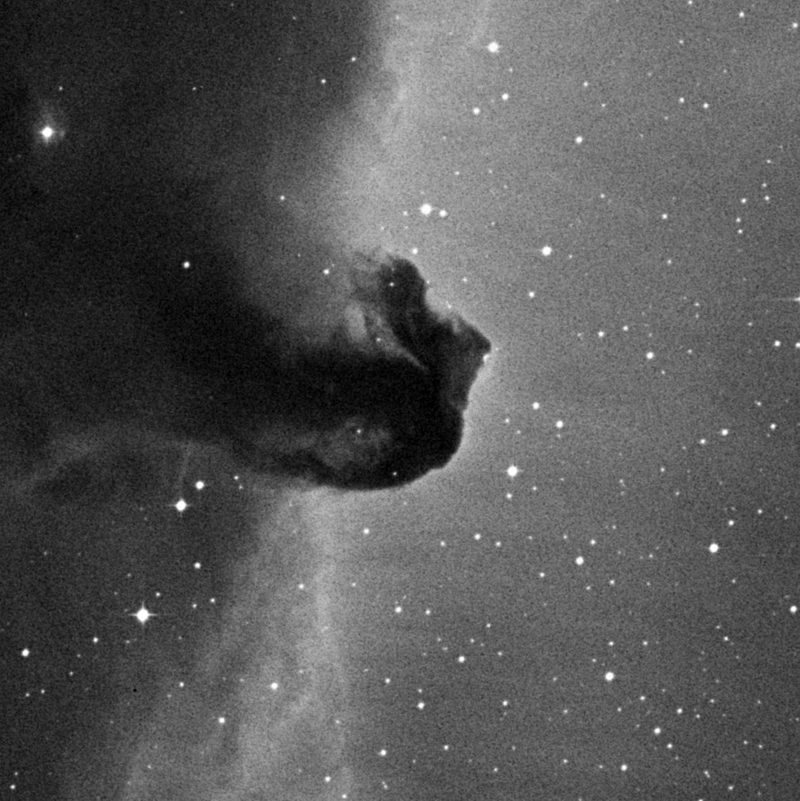
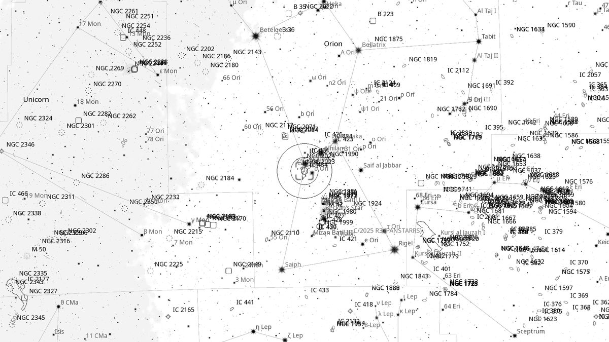
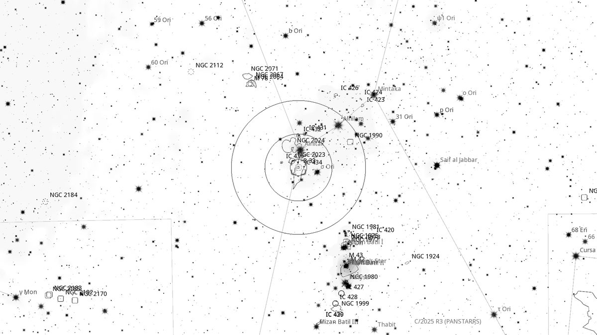
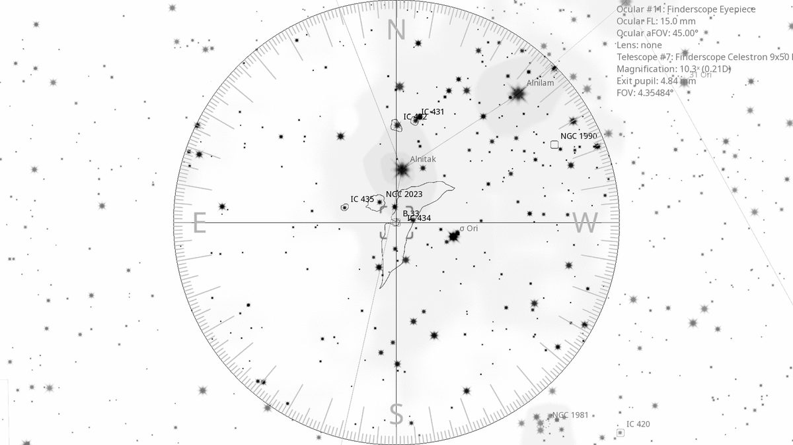
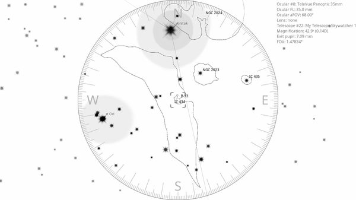

B 33 — Horsehead Nebula (DN)
| R.A. | Dec. | Size | Mag | SB | Cnt.St | Type | Distance | Chart |
|---|---|---|---|---|---|---|---|---|
| 05h 40m 58.0s | -02° 27′ 36.7″ | 4.0′ | 4.0 | -- | -- | DN | -- | -- |

Interactive Sky View
Background
The Horsehead Nebula is a dark dust cloud silhouetted against the pink glow of emission nebula IC 434, just south of ζ Orionis (Alnitak). It was discovered photographically by Williamina Fleming on a Harvard plate in 1888 and is one of the most photographed deep-sky objects in the northern sky. Visually, however, it is notoriously difficult: the horse-head silhouette spans only 6'× 4', requires dark transparent skies, and is most easily glimpsed by blocking Alnitak from the field and using an H-β filter to enhance the IC 434 background against which the dark nebula is seen. Lies 1,500 light-years away in the Orion molecular cloud complex.
My Observing Notes
56-cm (Club 22-inch f/3.5 “Lord Sidious”): First real test of the Club's new 22-inch Dob. Centred the telescope on the nearby reflection nebula NGC 2023 (just below the Horsehead) and pushed Alnitak out of the FOV to reduce the glare. With the 31 mm Nagler (90×, 0.91^\circ TFOV) and no filter, the NGC 2023 reflection glow was immediately visible. Blinking with the UHC filter brought out the field; a chain of stars sitting above NGC 2023 helped confirm that the dark silhouette of the Horsehead was indeed in the FOV. An exciting first visual catch of B 33.(11 April 2026)
References
Charts



